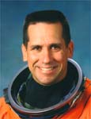

Lyndon B. Johnson Space Center
Houston, Texas 77058
|
National Aeronautics and Space Administration Lyndon B. Johnson Space Center Houston, Texas 77058 |
 |
Biographical Data |
||
William A. Oefelein (Commander, USN)
NASA Astronaut (Former)
PERSONAL DATA: Born March 29, 1965 in Ft. Belvoir, Virginia, but considers Anchorage, Alaska to be his hometown. He has two children. Recreational interests include weight lifting, wake and snow boarding, fishing, and backcountry hiking. His parents, Randall W. and Billye M. Oefelein, reside in Anchorage, Alaska.
EDUCATION:
ORGANIZATIONS: Seaplane Pilots Association.
SPECIAL HONORS: High Scholarship Graduate Oregon State University, McClarran Award for Strike/Fighter competition. Awarded the Strike/Flight Air Medal, Navy Commendation Medal, Navy Achievement Medal, and various other service awards.
EXPERIENCE: Oefelein received his commission as an Ensign in the United States Navy from Aviation Officer Candidate School in Pensacola, Florida in 1988. He entered flight training in Texas in 1989 and was designated a Naval Aviator in September 1990. He then reported to Marine Fighter/Attack Training Squadron 101 at Marine Corps Air Station El Toro, California for initial F/A-18 training. Upon completion of training, he was assigned to Strike Fighter Squadron 146 at Naval Air Station Lemoore, California where he made overseas deployments aboard the aircraft carrier USS Nimitz to the Pacific and Indian Oceans and the Persian Gulf in support of Operation Southern Watch. While assigned to VFA-146, he attended the US Navy Fighter Weapons School, TOPGUN, and was assigned as the Squadron Air-to-Air Weapons and Tactics Officer. Oefelein was selected for the United States Naval Test Pilot School at Naval Air Station Patuxent River, Maryland and began the course in January of 1995. After graduation in December 1995, he was assigned to Strike Aircraft Test Squadron as an F/A-18 Project Officer and Test Pilot. In February 1997, he went back to the United States Naval Test Pilot School as an Instructor flying the F/A-18, T-2, and U-6 aircraft. In February 1998, he transferred to Carrier Air Wing 8, Naval Air Station Oceana, Virginia where he was assigned duties as the Strike Operations Officer when he was selected for the astronaut program. Oefelein returned to Navy duty in May 2007.
Oefelein has logged over 3000 hours in more than 50 aircraft and has over 200 carrier arrested landings.
NASA EXPERIENCE: Selected by NASA in June 1998, Oefelein reported to Johnson Space Center in August 1998. Having completed 2 years of training and evaluation, he is qualified for space flight assignment as a pilot. Oefelein was initially assigned technical duties in the Astronaut Office Advanced Vehicles Branch and CAPCOM Branch. He completed his first mission as pilot on STS-116 and has logged over 308 hours in space.
SPACE FLIGHT EXPERIENCE: STS-116 Discovery (December 9-22, 2006). The seven-member crew on this 12-day mission continued construction of the ISS outpost by adding the P5 spacer truss segment during the first of four spacewalks. The next two spacewalks rewired the station’s power system, preparing it to support the addition of European and Japanese science modules by future shuttle crews. The fourth spacewalk was added to allow the crew to coax and retract a stubborn solar panel to fold up accordion-style into its box. Discovery also delivered a new crew member and more than two tons of equipment and supplies to the station. Almost two tons of items no longer needed on the station returned to Earth with STS-116. Mission duration was 12 days, 20 hours and 45 minutes.
JUNE 2007